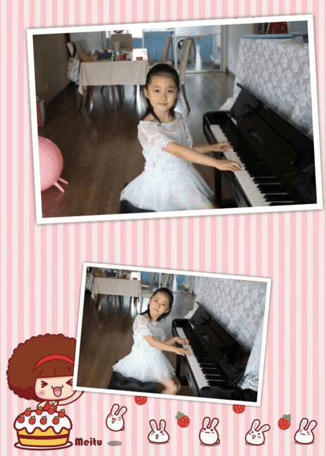
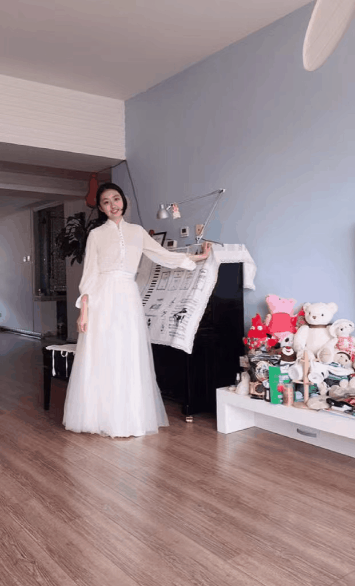

I am so glad to meet you in this website I made, whether you are my friends or strangers, we must share
something in common when you are reading these lines. I always consider myself as a versatile person, that’s
why I fail to conclude my self-introduction. That’s why I put it in this last session.
To say I am creative? Perhaps. I glued petals on the face mask as decoration.
To say I am adventurous? Perhaps. I rode a horse to jump over high fence.
To say I am lazy? Perhaps. I tried to escape training by laying on the snow.
To say I am persevering? Perhaps. I play the piano from 5 years old to now.


Therefore, I may not be described by a word, a sentence or even an essay. All my life experiences become
part of myself, my bone and my blood. I am not what I eat, but definitely I am what I explore. At the age,
almost eighteen, dozens of possibilities surrounded me.
" I want to be somebody,
who are you?
Do you have the same dream with me, too?
Have you ready to continue the adventure with me?
Then there’s a pair of us--yell to the world
Aloud.
How dreary to be nobody!
How obscure, like a shadow,
To follow others moody
name, to a blocking way!"
who are you?
Do you have the same dream with me, too?
Have you ready to continue the adventure with me?
Then there’s a pair of us--yell to the world
Aloud.
How dreary to be nobody!
How obscure, like a shadow,
To follow others moody
name, to a blocking way!"
Adapted from Emily Dickinson——《I'm nobody!》